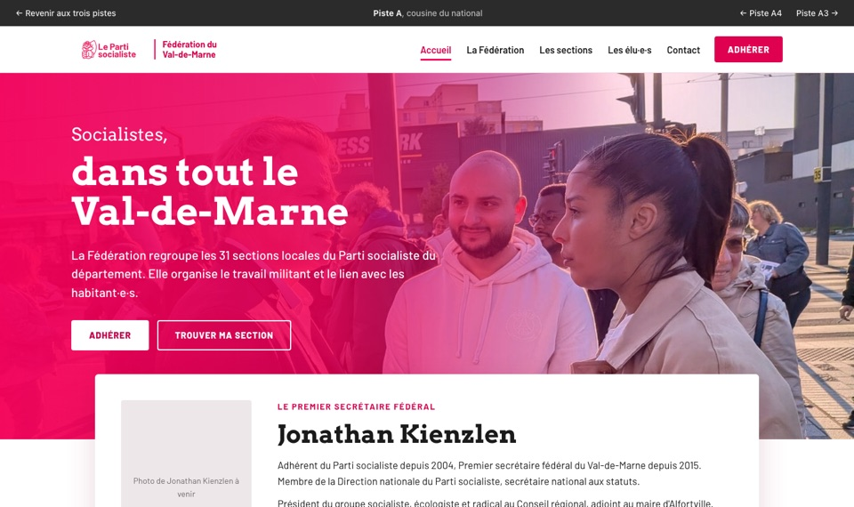
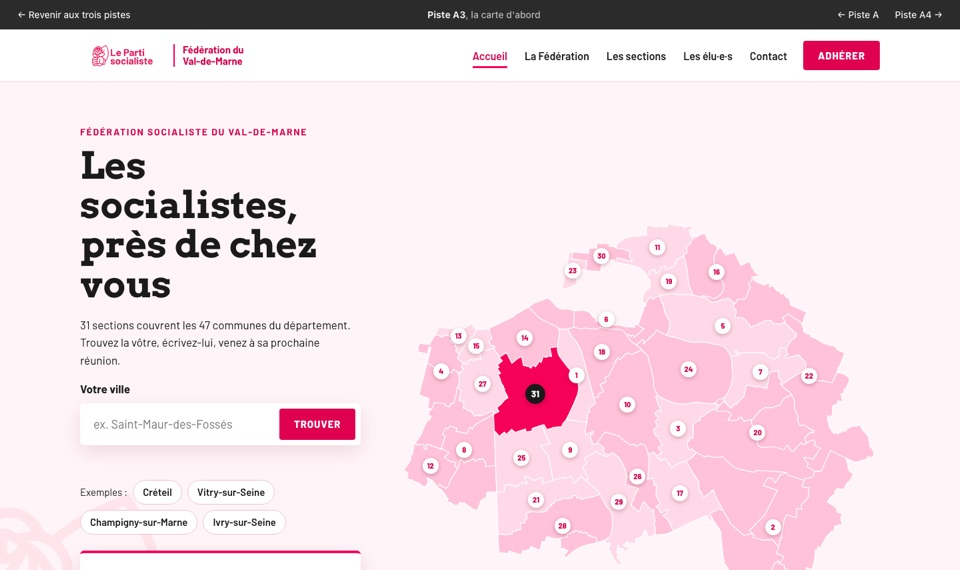
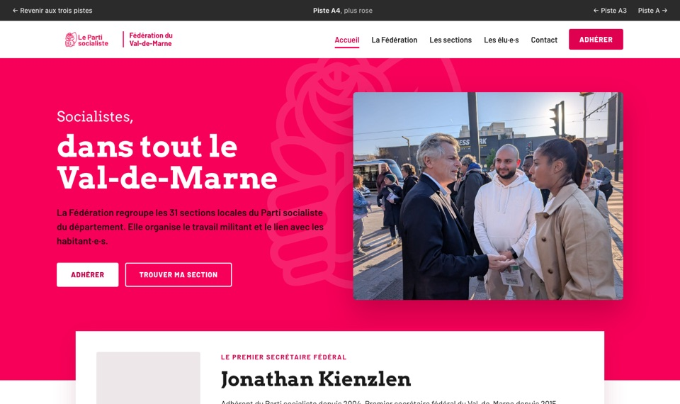

Le site de la Fédération, en trois pistes
Voici trois pistes pour le site de la Fédé, chacune en cinq pages : accueil, la Fédération, les sections, les élu·e·s et contact. Les textes viennent de ton document. Les photos d'ambiance sont provisoires (ce sont celles de la section de Vitry) et les portraits arriveront avec tes photos.
La carte des sections marche pour de vrai : tape le nom de ta ville ou clique sur une commune. La barre grise tout en haut permet de revenir ici, ou de passer à la même page dans une autre piste pour comparer.

Cousine du national
La plus proche du site du Parti socialiste : une photo sous un voile rose, la carte du Premier secrétaire fédéral posée dessus, du blanc et du rose pâle.
Ouvrir la piste A
La carte d'abord
Le site s'ouvre sur la carte des 31 sections : on cherche sa ville, on trouve sa section, on lui écrit. Le reste vient ensuite.
Ouvrir la piste A3
Plus rose
Entre les deux : l'ouverture et la carte sur des aplats rose plein, le pourpre pour la section choisie, un pied de page rose foncé.
Ouvrir la piste A4